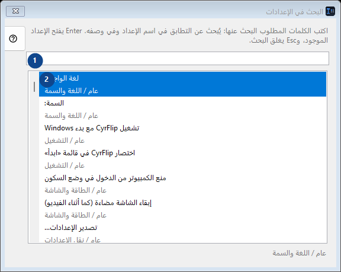
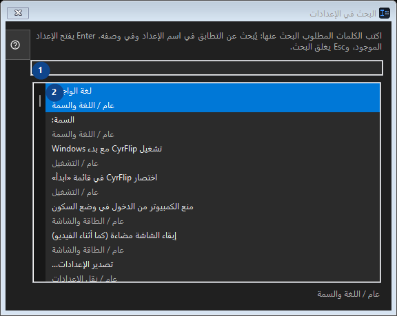

البحث في الإعدادات
الغرض
اقرأ الشروح المرقمة واختر القيم المطلوبة ثم تابع باستخدام أمر النافذة.


ترتيب الاستخدام
اقرأ الشروح المرقمة واختر القيم المطلوبة ثم تابع باستخدام أمر النافذة.
العناصر
1. البحث في الإعدادات
اختر أو أدخل القيمة الموضحة بجانب الحقل. راجعها قبل المتابعة.
اختصاراتك2. اكتب الكلمات المطلوب البحث عنها: يُبحث عن التطابق في اسم الإعداد وفي وصفه. Enter يفتح الإعداد الموجود، وEsc يغلق البحث.
تعرض هذه المنطقة المحتوى أو الحالة الحالية. اختر عنصرًا للعمل عليه.
اختصاراتك